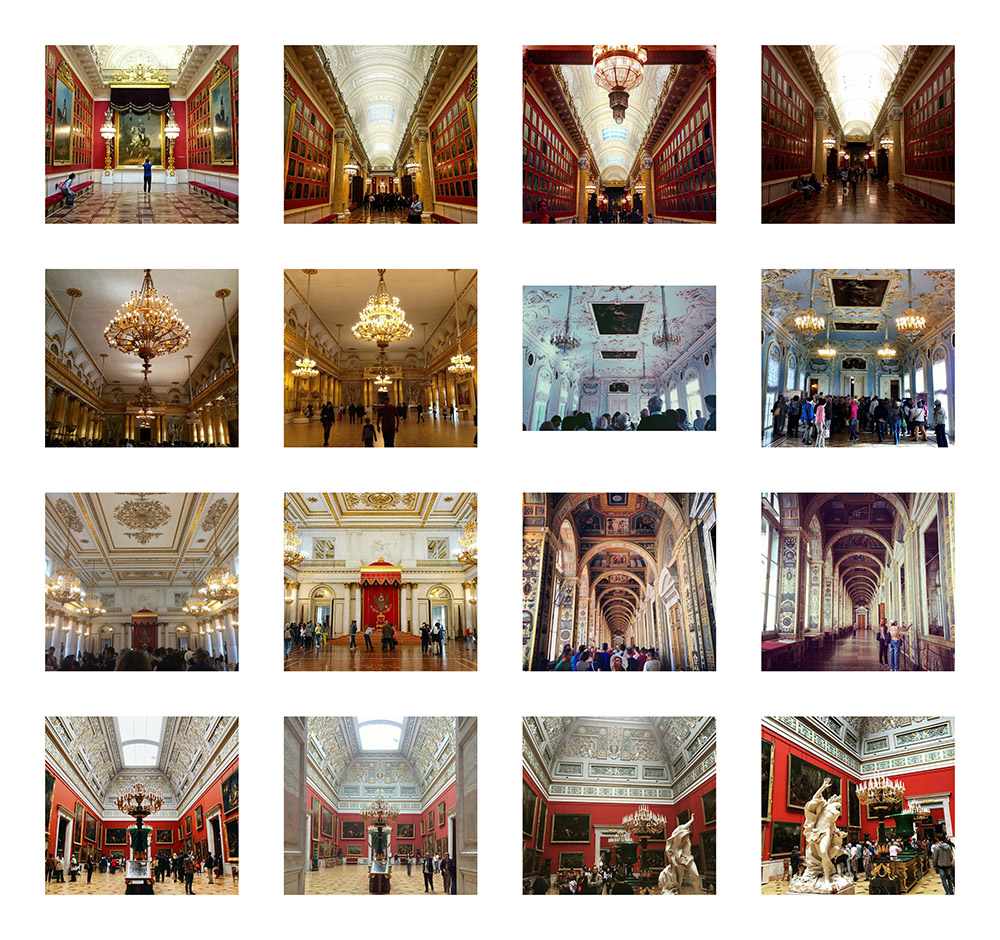
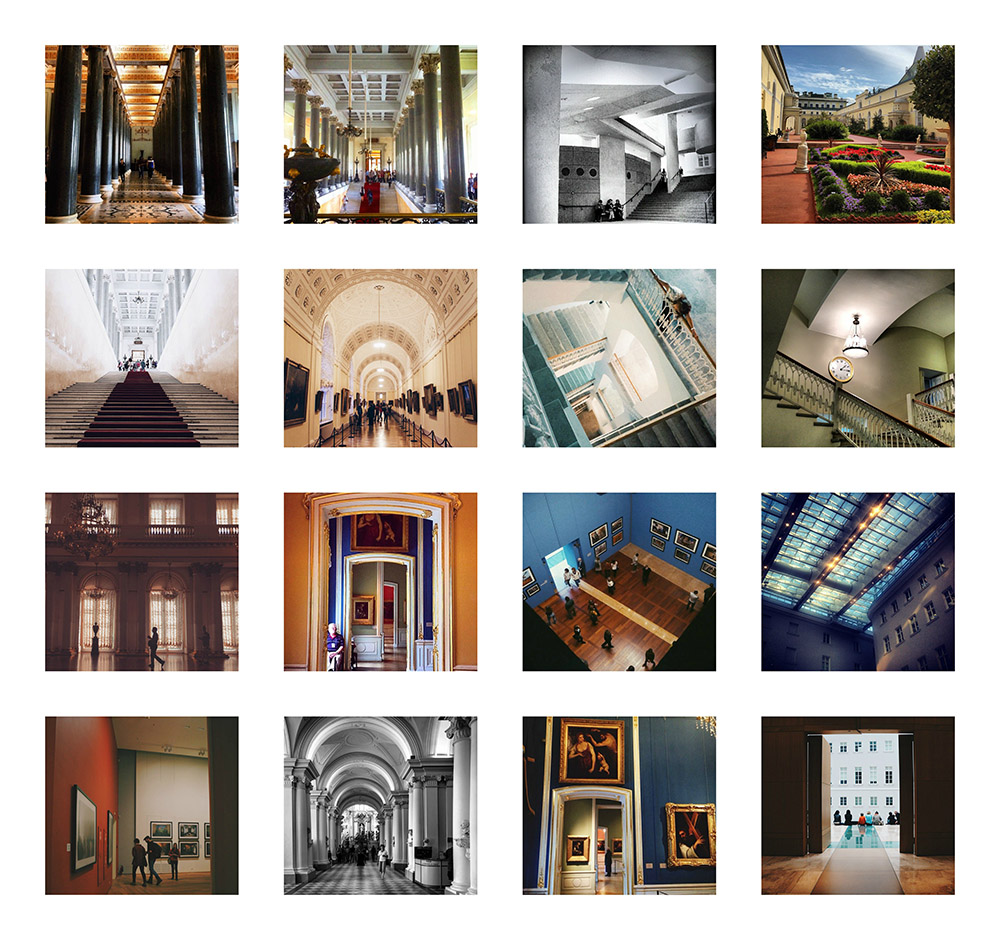
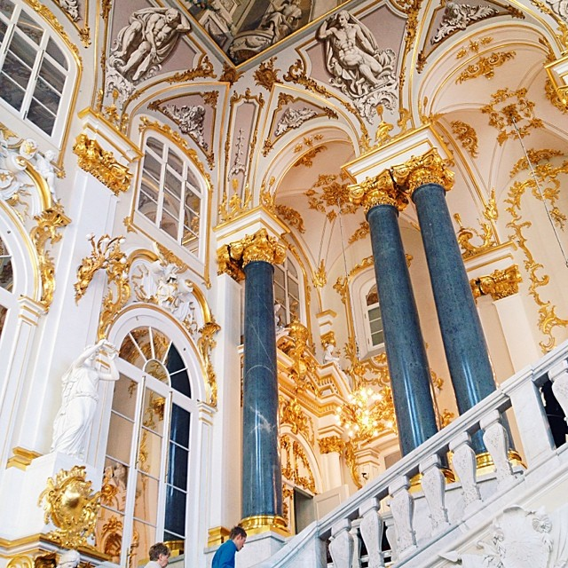
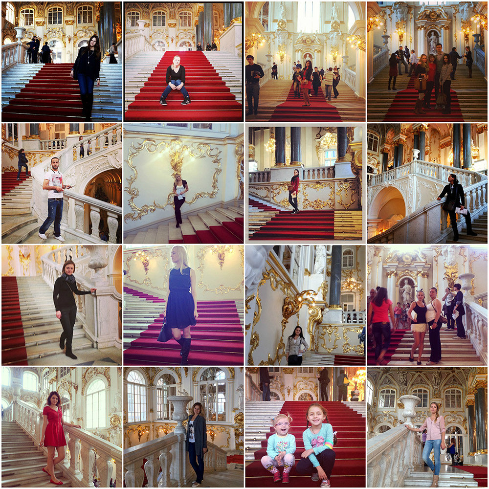
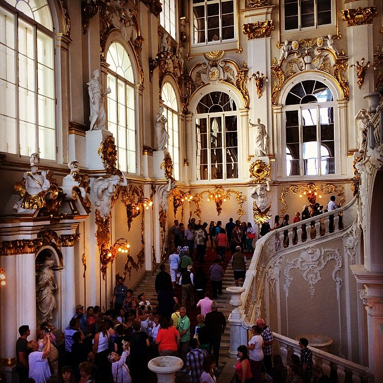
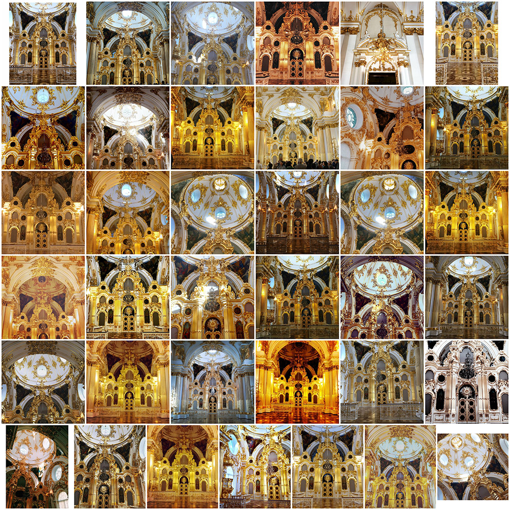
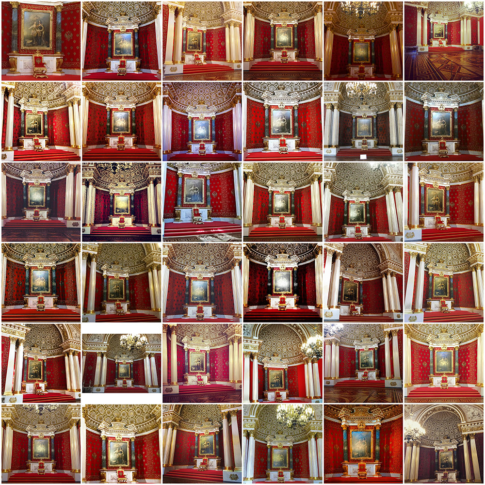
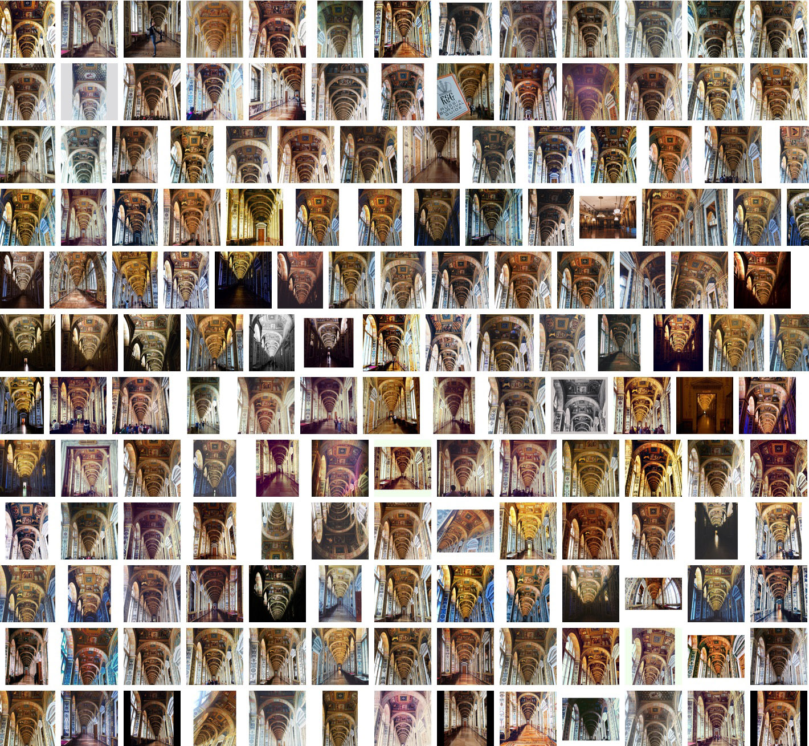
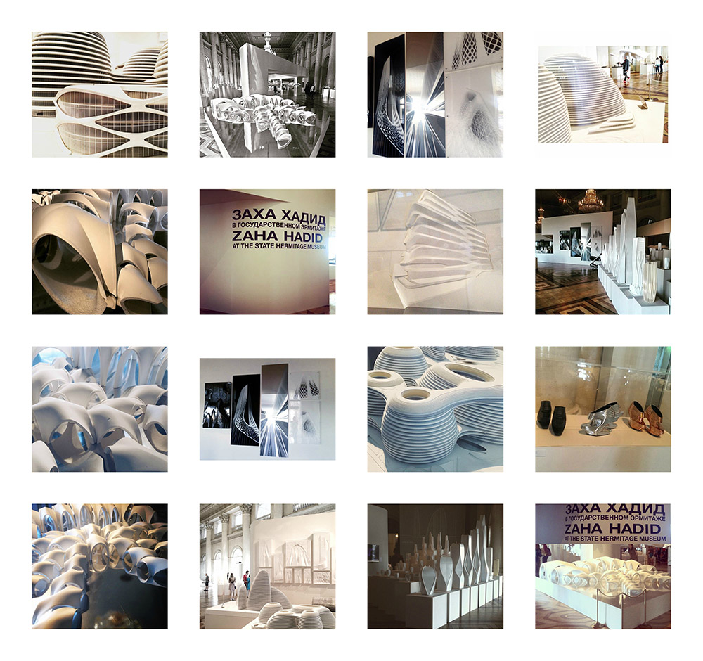
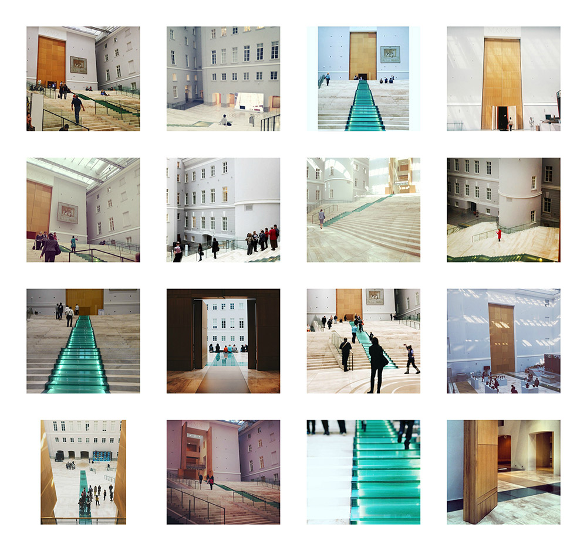

Здание музея и его интерьер - важные части экспозиции. Посетители проводят «визуальную инвентаризацию» Зимнего дворца,
поскольку в деталях воссоздают интерьер в Instagram.
Самыми популярными оказались люстры (409 фото), за ними следуют изображения потолка и пола (288 фото),
лестничных пролетов (57 фото) и украшений на стенах, особенно зеркал (48 фото), дверных ручек и предметов мебели.
Самые популярные «нефигуративные» объекты Эрмитажа – это холлы, коридоры и залы (548 фото).
Мы можем определить наиболее популярные места в Эрмитаже и маршруты, с помощью которых посетители осваивают пространство музея.


Для большинства посетителей осмотр начинается с Иорданской лестницы. Это первый «дворцовый» интерьер, который
производит сильное впечатление, и в целом наиболее узнаваемое место Эрмитажа. Иорданская лестница - одно из главных мест
для позирования и селфи.



Сходство маршрутов и путей освоения музея приводит к тому, что внимание посетителей привлекают одни и те же объекты.
Среди самых популярных мест музея мы также обнаружили Малый Тронный зал, библиотеку Николая Второго, Висячий сад Малого Эрмитажа и
Лоджии Рафаэля. Посетители часто фотографируют их с одного и того же ракурса, и эти залы, холлы и галереи являются наиболее
стандартизированными объектами для съемки.



В нашу выборку попали и фотографии с временных выставок. Судя по количеству изображений,
посетителей впечатлила ретроспективная выставка работ Захи Хадид в 2015г. Другие временные выставки 2011-2016 гг.
не столь ярко представлены в Instagram-фотографиях. Вероятней всего, основная аудитория все же нацелена на осмотр
основной коллекции и посещение музея в целом.

